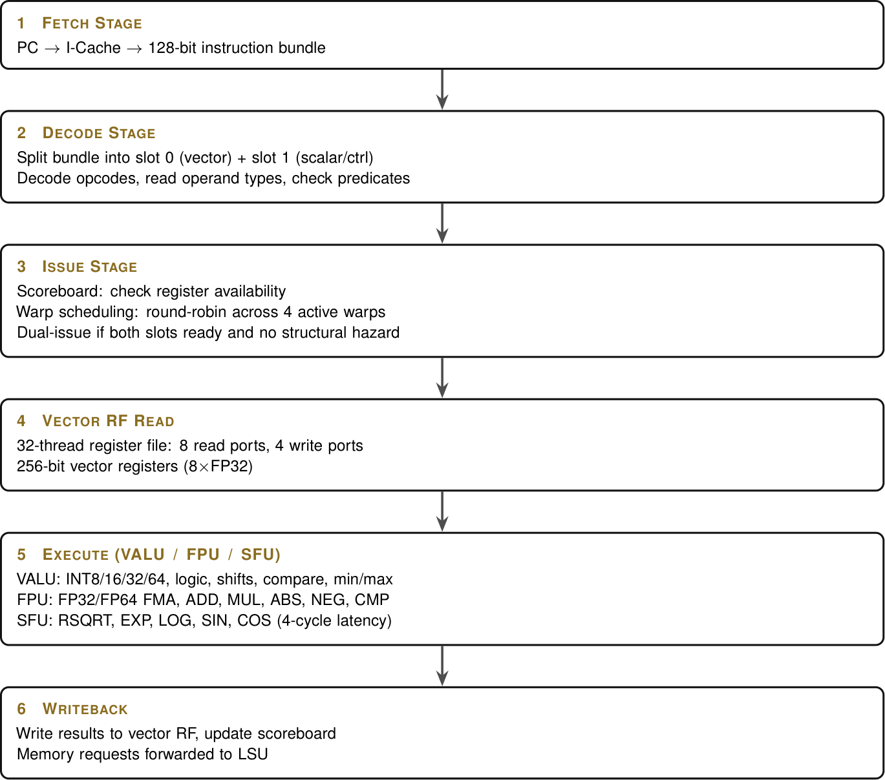

Governments and giants spend billions on one chip.
I designed the whole stack — the chips, the GPUs, the memory,
the operating system, the software — as one connected plan. And instead of waiting,
I shipped the software first.
Normally, a tech giant spends years and billions on one processor — Apple builds the chip, Samsung builds the screen, Microsoft builds the software, and none of it talks properly.
Brad Devices turns that around: I designed the whole thing myself. Every chip, every GPU, every byte of memory and every line of the operating system was written to work as a single machine.
Below is the shipped toolchain running live, in this tab: the same
bradc.c assembler and bvrt.c interpreter that run in CI, compiled to WebAssembly
and executing right now. bradc assembles saxpy, BVRT runs all 32 lanes and verifies the math,
and bradgdb steps to a breakpoint — no emulation, no mock.

Fetch → Decode → Issue → Register read → Execute → Writeback, drawn in the same gold-dark language every spec wears.
The 2×4 Neural Compute Cluster grid, AI-ISA scheduler and BradFusion fabric link — from §3.2 of the book.
Every claim on this site is backed by a file you can open and read today — receipts kept on disk, filed, and cross-referenced.
A real assembler for the BradVector instruction set — the language I built for every GPU I design. Assembly in, portable bytecode out.
An interpreter that actually executes that bytecode on a 32-lane SIMT virtual machine. Programs verify mathematically.
Breakpoints. Register inspection. Program counters. A debugger for an ISA that hasn't hit a fab yet — but already runs.
A cycle-level trace engine that exports real execution timelines to CSV. Profiling infrastructure ships before the chip — on purpose.
"You don't wait for silicon to write software.
You ship the software that forces the silicon to exist." — FESTUS BRADLEY NYADIMO, FOUNDER
Every white-box giant outsources the pieces. I design the pieces together so they drop into one fabric. Explore each part — or read why the whole is the point.
The BradChip SoC fuses CPU, GPU, NPU and a custom fabric onto one die. Torox GPU dies — BGT, BFT, BAT — share one instruction set.
No "video RAM" vs "system RAM" war. BradRAM + SPMP is one unified pool with an on-die L4 cache the GPU reads like its own notebook.
A homegrown OS — Mobile through Compute — built for one hardware line. 7-year updates. 13-year support. No legacy, no churn.
While other teenagers were unboxing their first graphics cards, I was designing the chips that go inside them — and then teaching my own architecture to run before anyone else's did.
No team, no VC, no lab. A laptop, an architecture, and the stubbornness to write every layer myself.
Read the full storyA four-year cadence drives every product. Hardware is tagged honestly between designed-and-tapeout-ready (Gen 1) and requires-future-physics (Vision) — and if the fab door is still shut in 2028, Gen 2 slips. The tag does not move with the date.
BradChip / BradXon, Torox G1 GPU dies (BGT/BFT/BAT 100-series), SPMP + BradRAM, BradOS, software platform. A complete, coherent plan — and a live toolchain today.
Torox G2 (200-series dies), photonic interconnect, sub-2nm node ladder. Newton's turn.
Self-evolving logic, quantum-entangled fabric — explicitly tagged vision until the physics actually exists.
The files are in the repo. The tests are green. The design is documented to the register.